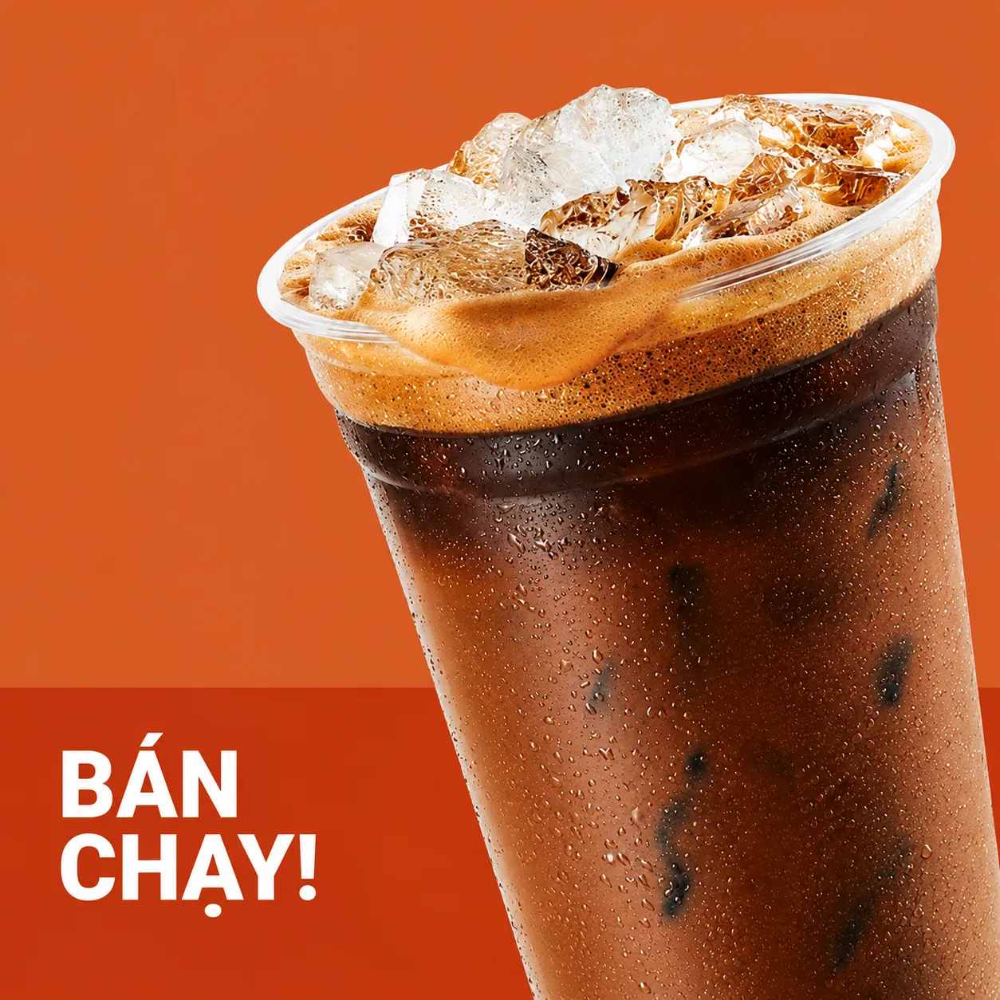
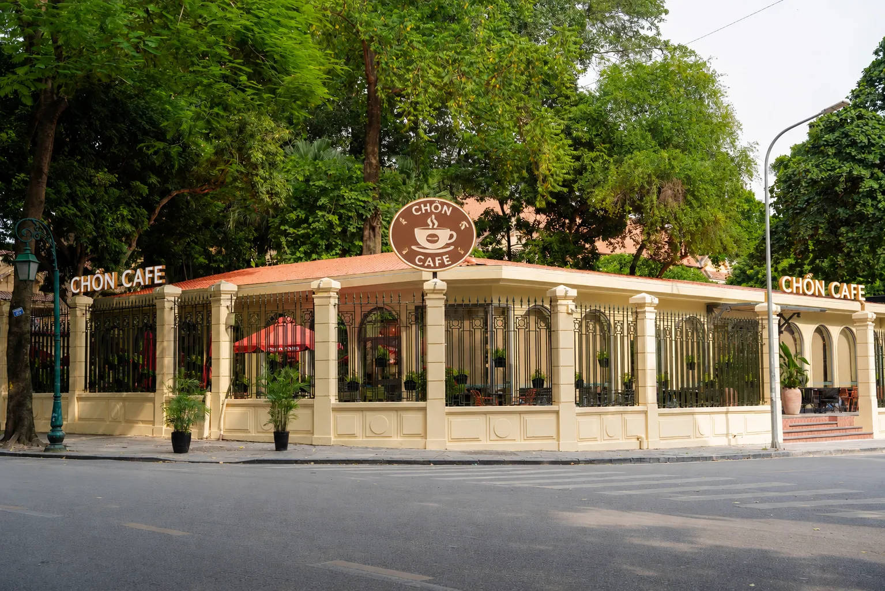

Cà phê phin sữa đá – hương vị quen thuộc mỗi ngày
Khám phá nét đặc trưng của cà phê phin và những phút giây chậm lại giữa cuộc sống thường ngày.
Góc chia sẻ · Chồn Cafe

Khám phá nét đặc trưng của cà phê phin và những phút giây chậm lại giữa cuộc sống thường ngày.

Vị cà phê nhẹ nhàng kết hợp hương đào tạo nên trải nghiệm mới lạ.
Từng giọt cà phê được pha chậm rãi mang đến cảm giác quen thuộc, thơm nồng và đậm vị. Bạn có thể chọn cà phê đen hoặc thêm sữa theo sở thích.
Latte là sự kết hợp giữa cà phê và sữa, phù hợp với người yêu thích hương vị nhẹ nhàng, dễ thưởng thức.
Hương dừa dịu ngọt phối hợp cùng cà phê mang lại lựa chọn mới mẻ cho những ngày bạn muốn đổi vị.
Từ cuộc trò chuyện cùng bạn bè đến phút nghỉ ngơi một mình, một ly cà phê có thể tạo nên khoảnh khắc đáng nhớ.
Thức uống kết hợp cà phê, sữa nóng và bọt sữa mịn, tạo nên cảm giác hài hòa trong từng ngụm.
Hãy thử một biến tấu từ cà phê với hương đào để khám phá cách thưởng thức mới theo sở thích của bạn.